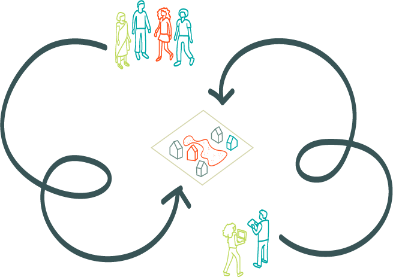
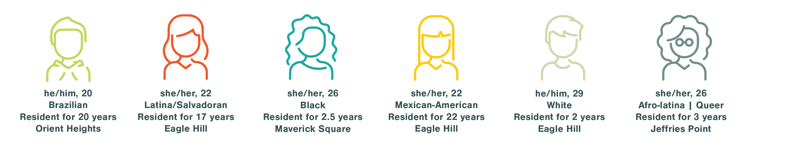

Estableciendo Raíces: Community Belonging Through Engagement
Project Background

Many public space design processes neglect to involve users in the middle developmental phase, focusing mostly on initial thoughts or reactions on already designed parcels. In East Boston, developers often disregard community voices, through hard to attend meetings and a lack of accessible information (no translating options, incomprehensible technical visuals, etc). The opinions of the community should not be seen as reactionary in the design process, but rather innovative, as they provide a viewpoint that is closely aligned with a space’s need.
An architect’s ultimate purpose is to create spaces for the user, and as such the main voices in the development of spatial design should be of those who inhabit the space. Spatial equity, especially in quickly developing urban centers like Boston, needs to become a priority. Minority communities are displaced by large waves of gentrification, and people are made to feel like they do not belong in spaces that they inhabit daily. Ensuring that people are intrinsically involved in development processes allows for the preservation and growth of communities.
Exploring the idea of belonging, this project looks to interact with East Boston residents to define the design and basis for a potential public space. The primary space of impact will be a BPDA owned parcel located west of the intersection of Condor and Putnam Streets. Primary stakeholders for this project will include Eagle Hill residents of all ages (as well as residents of the general East Boston area) particularly of an immigrant background and the BPDA. Using Participatory Action Research methods, such as photovoice, workshops, and data walks, the community will be engaged through ideation processes with the designer. This redefined design process will look to establish a sustainable cycle of collaboration that can be applied to a variety of public spaces and community projects.
Site Narrative: Understanding Eastie
East Boston is a community built and known by immigrants. Throughout its history, the development of community spaces and connections has been led by the residents of Eastie. A small and walkable neighborhood, it provides a welcoming and open invitation for community interaction and growth. However, a lot of the growth is largely confined to one area, defined by the squares. The transportation and community organization systems provide ways in which these opportunities could be expanded further and made more readily available to other areas of Eastie.
Spatial Ownership: Community and Stakeholders
Engagement Strategies
Interviews

A primary part of my community engagement strategy consists of a series of resident interviews. This longitudinal qualitative study allows for nurturing a working relationship with the community, through which a deeper and more holistic understanding of the neighborhood and the physical needs of the space can be achieved. The sample population was gathered through both purposive and snowball sampling methods, and has the potential to expand for future interviews. There are some limitations to this study, as the sample population is not varied enough in terms of age, leading to a potentially skewed perspective of the topics analyzed in this project. In an attempt to mitigate these limitations, residents are being asked to consider family/friends of different identities when answering some questions. The current group consists of 4 female identifying residents and 2 male identifying residents, with half of the residents being long-term/lifetime members of the community and half being fairly new to the Eastie community. Most are Latinx-identifying, which is in line with the demographic data of the neighborhood.
In the initial interview, the residents were asked to reflect on and share their experiences with local open/public spaces. They shared their favorite parts of the existing infrastructure, potential changes, and identified points of improvement as well as pride within the open space network. Finally, residents were asked to reflect on how their neighborhood affected their idea of comfort and belonging, and shared specific spaces or situations in which these ideas were most impactful to them, both positively and negatively.
Workshops
This will include a breakdown of the workshop process.
Surveys/Follow-ups
This will include a breakdown of the follow-up process.
Project Goals
Description of the project approach/goals will go here.
Preliminary Approach: Matrix of Belonging
Based on resident feedback, both in interviews and larger analyses made by additional sources, gentrification is the largest issue looming over the East Boston community. The effects of gentrification are widely known, and have been studied in depth both in the design and sociological fields. As an addition to the existing research, this project looks to gentrification trends in East Boston as a way to map a Matrix of Belonging. This matrix is defined in three parts: Materiality, Scale, and Form. These characteristics have been flagged by residents as points of discomfort, worry, and concern. In an attempt to avoid the negative effects of new development, a parallel matrix is created to show Materiality, Scale, and Form that incites comfort and belonging.
Catalogue of Belonging
Description of catalogue will go here.
Future Use + Continuing Engagement
This is how I see this project continuing/helping the field.